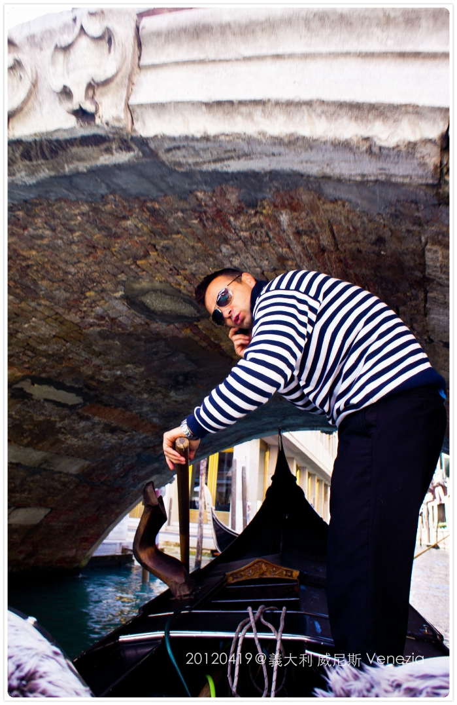
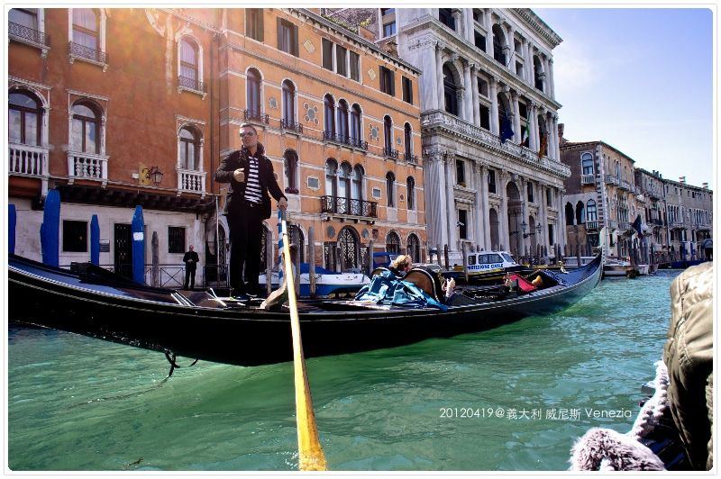

威尼斯一大早，天氣放晴水也退了，歐洲的天空真的好藍！
在廣場上有兩根大石柱，一根上面是聖泰奧多羅像，另一根是聖馬可的石獅子
據說這尊石獅子曾被拿破崙掠奪至巴黎，歷經18年才重返威尼斯
因此有翅膀的石獅子也成為威尼斯的象徵
所以每年威尼斯影展最大獎項也是以『金獅獎』以表象徵。

早餐約會，一天當中好像只有早餐比較不會踩雷 XD，因為我很沒出息的的都只吃麥片＋牛奶

飯店旁的小門一打開河邊就是Taxi招呼站，威尼斯全島看不到一台車子，連腳踏車也沒有
這裡的小黃當然也是船嘍！
這是一台水上垃圾車，在觀光客眼裡這也是件新鮮事兒 硬是要拍，哈！
早起就是為了在威尼斯一百多個小島上多留下我們一點足跡
但事實證明，太多吸引我們目光的東西了，根本來不及跨越到另一座橋就得集合了.....
威尼斯人，都好晚才開店，好早下班！我好想花錢啊啊啊啊～～～
在威尼斯迷路是很常的事，但只要記住幾個地標就絕對可以找到回家的路
這是地標之一的『里奧多橋』(Rialto Bridge)，
當地人由於橋頂的冷風而將橋的頂點稱為「威尼斯冰盒」
站在橋上可眺望整個大運河風光，很多明信片都是取這角度的景色，
白天、黃昏、夜晚各有不同風情，猛哥這張拍的跟畫一樣，超美的！
卡卡也來打卡一下 XD
我們很早就搶先來拍照，愈晚人愈多
尤其橋的兩側商店跟攤位充斥，人潮都聚集在這，很熱鬧！
走回集合地點，跟barbie來個熱情擁抱，我們是有多久沒見了蛤？
話說我跟她的親密照好像還比跟猛哥多，哈哈哈
馬上要去參觀道奇宮
嘿嘿～絕對不能讓“熱點丹“脫離我的視線 XD
道奇宮（Doge's Palace)，也可稱為總督宮，一座哥德式建築
是威尼斯歷代總督的辦公處，同時也是最高法院、秘密警察與其他市府機關的所在
因威尼斯共和國是由貴族共同統治的國家，並不是君主國，所以元首被稱為總督，任期為終身制
道奇宮後方的圓頂就是聖馬可教堂
黃金階梯，這是貴族才能由這裡進入總督府內部
上了階梯之後裡面就不能拍照了，回來發現我們真的很乖，連偷拍一張都沒有，哈
但裡頭的裝飾無論是天花板或是油畫都是鑲著滿滿金色雕飾
有興趣的朋友可點網站 http://venice.arounder.com/it/palazzi-storici/palazzo-ducale
耶！參觀完畢 bravo（時間太久，我已經忘了我們為什麼要醬XD）

接著參觀聖馬可大教堂，這是我在義大利參觀無數教堂中最喜歡的一座
昨天下雨的鐵架還沒收，雖然外面地是乾的，但其實教堂裡面有小小淹水
聖馬可教堂(St. Mark's Basilica)
建於西元839年，是拜占庭式的建築，五座圓頂是模仿土耳其伊斯坦堡的聖索菲亞教堂
教堂內部裝飾華麗，鍍金的拜占庭風格馬賽克裝飾畫，有「黃金教堂」的美稱
在兩側半圓形窗上是關於聖馬可事蹟的馬賽克壁畫，
主題分別為 從君士坦丁堡運回聖馬可遺體、遺體到達威尼斯、最後的審判、
聖馬可神話禮讚和聖馬可進入聖馬可教堂
裡頭也是禁止拍攝，也不能帶背包進去，大家只能過乾癮了
大教堂旁的聖馬可鐘樓，上面有個能指示二十四小時以及十二星座的時鐘
只要在聖馬可區活動的人，都可以聽得見鐘樓的報時聲
今天的解說員，長的超像小英的！！所以我也忘了她的本名，因為都亂叫人家小英 XD
===============貢多拉 Gondola ===============
「貢多拉」是威尼斯水道上最具代表風味的交通工具，也是象微威尼斯的標誌
船身完全由手工製作，共由280塊木頭所組成，造價高達百萬台幣，堪稱水上法拉利
外觀設計原本是各式各樣的，因16世紀的貴族們經常以雕刻精美的貢多拉炫耀自己的財富，
為了遏制奢靡的風氣，威尼斯政府在1562年頒布了一條法令，
規定所有貢多拉必須漆成黑色，且統一了它的特定樣式，只有在特殊場合才會被裝飾成花船。
每條貢多拉由一名船夫駕駛，船夫站在船尾靠行駛方向的左側一邊，面向船頭，
用單隻船槳在船的右側水中推水，船身採用的是不對稱設計，停泊和航行時船身略微向右傾斜，
航行時可以抵消站在左側船夫的體重和船槳的划動，
使得貢多拉能夠筆直前進，避免原地轉圈。（資料來源：維基百科）
船夫連服裝都是制式的條紋上衣＋黑長褲。聽說船夫平均月收入有5000歐元（驚）
終於換我們搭船嘍！
結果我們千挑萬選，選到一個帥的但是狂玩手機的船夫............

一直在講手機不認真划，但也是夠厲害，水道這麼小都不會擦撞
但月收入有五千歐的話，你也認真點好嗎！？
一艘船剛好六個人坐，這是包含在我們團費當中
一般搭乘的官方價格是四十分鍾80歐，每多二十分鍾加20歐（夭壽貴）
這傢伙終於不講手機了，但問他可不可以唱首歌，也被拒絕了............（心碎）
不過船伕也不是誰都可以擔任的工作，以前是家族世襲制
現在雖然不是，但也要通過考試及嚴格訓練，所以個個有身好本領，才能輕鬆穿梭在小小巷弄中
一座泡在水中千年的城市，水道交織在舊與新之間真的很迷人
水看起來不是清澈那種，但也完全沒有聞到怪味
牆上全是歷史斑駁的痕跡，整個很有fu
來到這才知道其它地方的仿威尼斯“好假“，根本完全不是那麼回事兒 XD
邊講電話還可以邊彎腰過橋，好身手啊！！！（拍手）
（他真的一直在講電話...........＝ ＝）

離開小水道進入了大運河 Canalazzo，又稱是世界最美麗的街道

在水道中的這些木頭船椿，是用橡木做作的，每5－10年會換新
這些淘汱的木椿保留了海水侵蝕的自然紋路，有些傢俱商會特別進口來賣
結束貢多拉體驗上岸後還要付個1歐的小費吶！
雖然這位老兄工作不是太認真，我小費付的不是太甘願........
但看在你賞心悅目的份上，原諒你，誰叫我們自己重外表捨去那些認真的老伯伯咧～XDDDD
現在回頭看照片，三位人妻中有兩位都已經要當媽咪了！！哈哈 恭喜你們！！
但各位可以不用催我跟上進度，我目前沒這個打算
 歐洲冒險 MK義大利蜜月系列
歐洲冒險 MK義大利蜜月系列